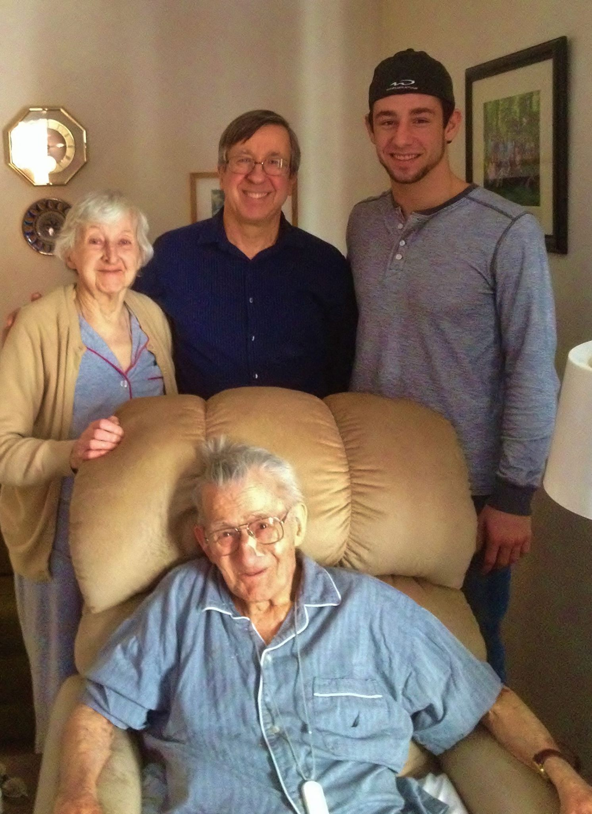

In Loving Memory of David John Pagini
David John Pagini, 97, of 288 Springdale Avenue, Meriden, husband of Frances (Kriwacki) Pagini, passed quietly at his home on October 30, 2014, after a lengthy illness. David was born in New Haven on July 3, 1917. David was the son of Ettore Pagini of Montebello, Pesaro Italy, and of Anna DelVecchio of Saltara Pesaro, Italy. His mother, Anna, an immigrant of several years, was convinced that the parade passing Grace New Haven Hospital the day after his birth was sent to celebrate the event. David has been a resident of Meriden all of his life. He was an altar boy at Our Lady of Mount Carmel Church; attended Nathan Hale Grammar School (now Our Lady of Mount Carmel School), and Meriden High School.
David grew up in Meriden's Italian-American neighborhood patterned with vineyards, small markets, shops and bakeries and bustling sidewalks. One of his best memories is hearing the glorious voices of world-renowned opera star Rosa Ponselle and her sister drifting the several blocks from their home as they practiced the arias.
David and his sister Adele's parents saw to it that their children lived well, dressed well, and were able to achieve their life goals. His father Ettore’s labors as a coal handler and as a factory worker enabled his son David to attend Pratt Institute in Brooklyn, NY, considered among the best colleges in the Northeast, specializing in architecture, interior design and industrial design. David also worked in Meriden factories after attending Pratt. He faithfully followed the Pratt motto to “Be true to your work, and your work will be true to you.” He was employed for over thirty years as an industrial designer of business furniture and equipment at GF Business Equipment, Inc. on Garden Street in Hartford. He commuted to work each day, walking to the Meriden Station of the NYNH&H Railroad, arriving at Union Station, walking the few hundred feet to his place of work. It was on one of those routine commutes by train at the Union Station stop when he met a young and attractive girl from a Kensington Polish-Lithuanian family. They married in 1949, and celebrated their 65th wedding anniversary this year, having raised 5 children and caring for his parents, all in the little cape at the end of Springdale Avenue.
David was a Master Sergeant in the Army Air Force during WWII, serving at the Victorville, CA Air Force Base, using his Pratt-acquired skills to draw topographic maps and other strategic materials designed to improve the Army Air Force’s bombing skills. He narrowly missed being shipped out to be a tail gunner due to his superior marksmanship skills, but ultimately was considered of more value in a non-combat role.
David was an avid Yankees fan most of his life, and later a faithful fan of UConn men and women’s basketball.
David and Frances were not world travelers, but their nearly weekly forays throughout New England and New York following retirement were a great source of enjoyment for them. Even more, their "retirement" hobby was no less equal in labor and time as it was to the creation of an arboretum. Who can ever forget the carpet of color which greeted each visitor as they rounded the corner of their humble cape. In 1994, their labors were rewarded when they won the Meriden Daffodil Garden Contest in the category of "naturalized garden."
David’s artistic bent inspired him to create laminated Plaster of Paris sculptures, lead to display of one of his works at the Wadsworth Atheneum, one of the oldest continually operating art museums in the U.S.
David was a parishioner of Our Lady of Mount Carmel Church, a member of the Mt. Carmel Society, the VFW, & Asst. Scoutmaster and Committeeman for several Meriden troops of the Boy Scouts of America. Besides his wife Frances, he is survived by a daughter Elizabeth (Rod) Plaisted of Yarmouthport, MA; a daughter Claire Pagini of Thomaston; a son Robert (Marcella Drozd) Pagini of Meriden; a son Donald Pagini of Meriden and daughter-in-law Janet Zagorski Pagini of Guilford; and a son John (Kathleen Lodge) Pagini of Coventry. David also leave behind his beloved grandchildren Amy (Torchia) Bacon; Daniel Torchia; Katie Torchia; Jeffrey Pagini; Kevin Pagini; David Pagini; Joseph Pagini; Christina (Pagini) Hatch; step-grandchildren Salvatore Camera, Victoria (Camera) Reed; Patricia (Camera) Sumara; and Deborah Camera-Moriarty; great-grandchildren Emma and Caitlyn Pagini; Maya, Jude, Jonas, Layla Bacon; Ava Strassberger; Sean, Brandon and Ryan Hatch; and step-great-grandchildren Nicholas & Natalie Camera, Tori (Hendrix) Duckworth, Kyle Hendrix, Jessica & James Cromarty, and Brianna & Gracey Moriarty. He is also survived by 5 nieces and 2 nephews, and by 10 first cousins in Italy and Belgium. He was predeceased by his sister Adeline Mary (Pagini) Pedrolini, and by son-in-law James Torchia.
The family wishes to express its heartfelt appreciation for the care services provided by the hospice team of CT VNA Health Care and for the excellent care provided by Always Best Senior Services of Central Connecticut, Inc., especially our dedicated long-term caregiver Laura Lee Sparks, and hospice caregivers Yamilette Ortiz and Tawanna Fullwood.
Calling hours for family and friends will be held on Wednesday, November 5, 2014 at 6-8 PM, and on Thursday, November 6, 2014 at 8:30-9:30 AM at the J.J. Ferry & Sons Funeral Home, 88 East Main Street, Meriden, and a Mass of Christian Burial will be held at Our Lady of Mount Carmel Church, 109 Goodwill Avenue, Meriden at 10 AM. Burial with Military Honors will be in Sacred Heart Cemetery. Please see this obituary at www.jferryfh.com.
In lieu of flowers, contributions in David’s memory may be made to St. Jude's Children's Research Hospital, 501 St. Jude Place, Memphis, TN 38105.